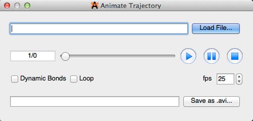

Extension Menu#
The Extensions Menu is a catalog of computational plugins equipped with Avogadro. These plugins can interact with molecules, generate input file dialogs for quantum codes, and create molecule property dialogs.

Animation#
Selecting “Animation” will open the animate trajectory dialog box shown below. From here you can load a file, view and edit the animation, as well as save the file in a PC compatible format.

Optimize Geometry#
“Optimize Geometry” provides a quick, realistic rendition of a molecule using molecular mechanics.
Molecular Mechanics#
“Molecular Mechanics” allows you to edit the geometry optimization of a molecule, so that it best suits your purposes.

Setup Force Field…#
A dialog box will open when “Setup Force Field…” is selected. This dialog box provides you with the ability to choose the type of force field, and algorithm that can best optimize your molecular parameters, and preferences.

Calculate Energy#
“Calculate Energy” determines the amount of energy per the amount of material (kJ/mol), and displays this number in a pop up dialog box.

Conformer Search#
“Conformer Search” is a way to easily search for conformers within a molecule (dialog box shown below). A more detailed outline on how to perform a conformer search is found in the “Optimizing Geometry” section of this manual. Avogadro only renders staggered conformations, and does not calculate ring conformers.

Constraints#
“Constraints” is a way to ensure atom stability in various selections (dialog box depicted below). The constraints that can be applied to a molecule include Ignore Atom, Fix Atom, Fix Atom X, Fix Atom Y, Fix Atom Z, Distance, Angle, and Torsion Angle. A detailed outline on how to use the constraints feature is found in the “Optimizing Geometry” section of this manual.

Ignore Selection#
“Ignore Selection” allows you to select a specific part of a molecule to omit during a geometry optimization.
Fix Selected Atoms#
“Fix Selected Atoms” also allows you to set a certain part of a molecule to fix during optimization.
Avogadro Extensions–Plugins#
Avogadro provides you with the ability to interface your molecules with other dialog based plugins. These extensions interact with a molecule to provide further molecular information, and additional computation abilities. These plugins include but aren’t limited to GAMESS, Abinit, Dalton, GAMESS-UK, Gaussian, MOLPRO, MOPAC, NWChem, PSI4, Q-Chem, and LAMMPS.
General “How To” for Plugins#
Avogadro (as you will see below) can be used to display molecular orbitals, QTAIM, spectra, as well as create surfaces. However, many of these features can not be used to their full potential without first running one of the plugins listed in the section above. Gaussian is one of the most common plugins used, due to it’s wide range of basis sets/functions.
Running Gaussian#
After selecting “Gaussian” from the Extensions menu, the dialog box depicted below will appear. You can edit the dialog box and add specific keywords to utilize these features in Avogadro. For example, typing “freq” in the dialog box will compute force constants and vibrational frequencies. More information on keywords for Gaussian can be found at the Gaussian website (http://www.gaussian.com/g_tech/g_ur/l_keywords09.htm). Then clicking generate will let you save the file to your computer, so you can run the file in external software.

Once the file has been run through the external software, you will have a .g03 or .g09 file that will open the keyword selection in a toolbar on the right hand side of the screen. “Freq” will open the vibrations toolbar shown below.

Molecular Orbitals#
The “Molecular Orbitals” selection will display the molecular orbitals for orbitals with full status bars. The quality of the orbitals can be adjusted an reconfigured if need be. This feature only works by running gaussian extension files (.fchk, .g03, .g09, etc.).

QTAIM (Quantum Theory of Atoms in Molecules)#
QTAIM displays the implicit bonding that is theorized to take place between the hydrogens of organic crystals (the implicit bonding is conveyed through dots). This display type is utilized by importing a .wfn file from the “QTAIM”, “Molecular Graph” selection under the “Extensions” menu. Selecting “Molecular Graph with Lone Pairs” or “Atomic Charge” will provide concurrent information about the molecule. More information can be found on this process in the Tutorial section of this manual.

Spectra…#
Clicking on “Spectra…” will create a spectra visualization of a .g03, or .g09 file that has been run with the keyword “freq”. A spectral visualization can also be created through the vibrations toolbar by selecting “Show Spectra…”.

Create Surfaces…#
“Create Surfaces…” allows you to view the Van der Waals, Electrostatic Potential, Electron Density, and Molecular Orbital Surfaces. The surface type options for viewing depend on what type of calculations have previously been run on the molecule. The type of file you open/create allows for more or less surface viewing options (generally discussed under Avogadro Extensions–Plugins). This feature also allows you to edit the color, resolution, and iso value to further enhance your surface.